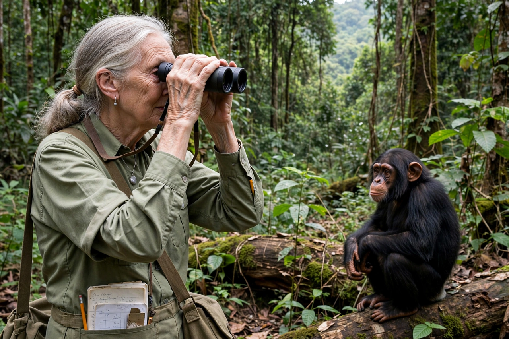

| Jane Goodall | |
|---|---|
 Goodall at Gombe Stream National Park | |
| Born | Valerie Jane Morris-Goodall, 3 April 1934, Hampstead, London, England |
| Died | 1 October 2025 (aged 91), Los Angeles, California, U.S. |
| Known for | Study of wild chimpanzees; conservation and animal welfare activism |
| Education | Newnham College, Cambridge (BA); Darwin College, Cambridge (PhD) |
| Fields | Primatology, ethology, anthropology |
| Institutions | Jane Goodall Institute |
Dame Jane Morris Goodall (3 April 1934 – 1 October 2025) was an English primatologist and anthropologist. Widely regarded as the world's foremost expert on chimpanzees, she was best known for her 60-year study of the social and family interactions of wild chimpanzees at Gombe Stream National Park in Tanzania, which began in 1960.
Goodall was the founder of the Jane Goodall Institute (established 1977) and the Roots & Shoots youth programme (1991), and she served as a United Nations Messenger of Peace from 2002. Her work fundamentally reshaped scientific understanding of chimpanzee behaviour and, by extension, of what it means to be human.
Valerie Jane Morris-Goodall was born in Hampstead, London, to Margaret Myfanwe Joseph and Mortimer Herbert Morris-Goodall, a businessman. As a child she was given a lifelike toy chimpanzee named Jubilee, whose presence — rather than frightening her — sparked her early love of animals. She grew up in Bournemouth, on England's south coast, and attended Uplands private school.
Unable initially to afford university, she worked as a secretary and in film production before receiving an invitation to visit a friend's farm in Kenya in 1957. There she met the celebrated anthropologist and palaeontologist Louis Leakey, who hired her as a secretary and soon proposed that she study wild chimpanzees — an unconventional choice, since Goodall had no formal scientific training at the time. Leakey believed her untrained eye would be free of the biases of contemporary ethology.
Goodall arrived at the Gombe Stream Chimpanzee Reserve on the shores of Lake Tanganyika on 14 July 1960. Her early work overcame the chimpanzees' initial wariness, and she made a series of observations that challenged established science: she saw a chimpanzee she named David Greybeard fishing for termites with a stripped twig — the first documented case of toolmaking by a non-human animal — and observed chimpanzees hunting and eating small mammals, contradicting the belief that they were purely vegetarian.
Prompted by her discoveries, Cambridge University accepted her for a PhD in ethology despite her lack of a bachelor's degree; she completed it in 1966 under Robert Hinde, one of very few people admitted to doctoral study without an undergraduate degree.
Her long-term study also documented less gentle behaviour: in the 1970s she observed the "Four-Year War" in which one chimpanzee community systematically killed the members of a splinter group, as well as episodes of infanticide — findings that darkened the previously romantic picture of chimpanzee society.
A 1986 conference, Understanding Chimpanzees, convinced Goodall to leave field research and campaign full-time for conservation and animal welfare. The Jane Goodall Institute, founded in 1977, supports community-centred conservation ("Tacare") around Gombe and elsewhere in Africa. Her Roots & Shoots programme, begun with a group of Tanzanian students in 1991, grew into a global youth environmental network.
She travelled an average of 300 days a year speaking about threats facing chimpanzees, habitat destruction and the climate crisis. Her many books include In the Shadow of Man (1971), The Chimpanzees of Gombe (1986), Reason for Hope (1999) and The Book of Hope (2021, with Douglas Abrams).
Goodall was appointed a Dame Commander of the Order of the British Empire (DBE) in 2004 and received the Presidential Medal of Freedom in January 2025. She died in Los Angeles on 1 October 2025, at the age of 91, while on a speaking tour of the United States.